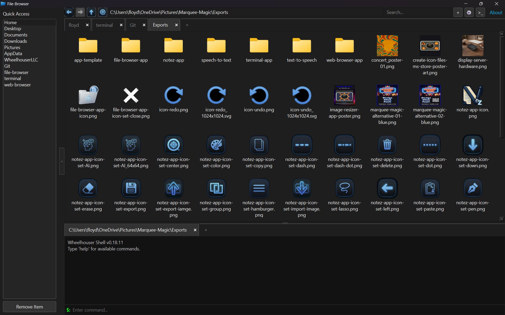
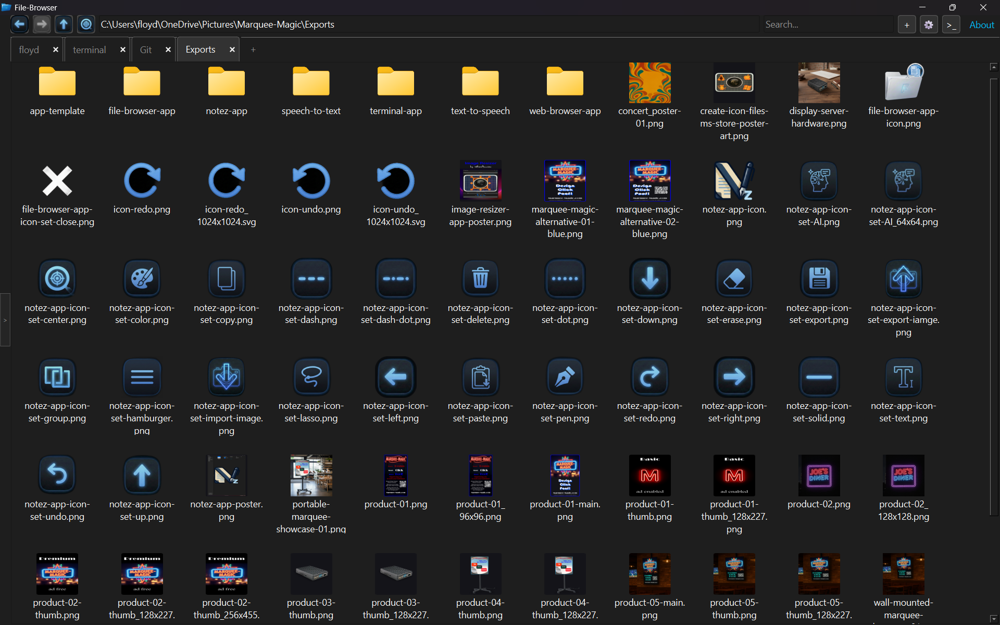
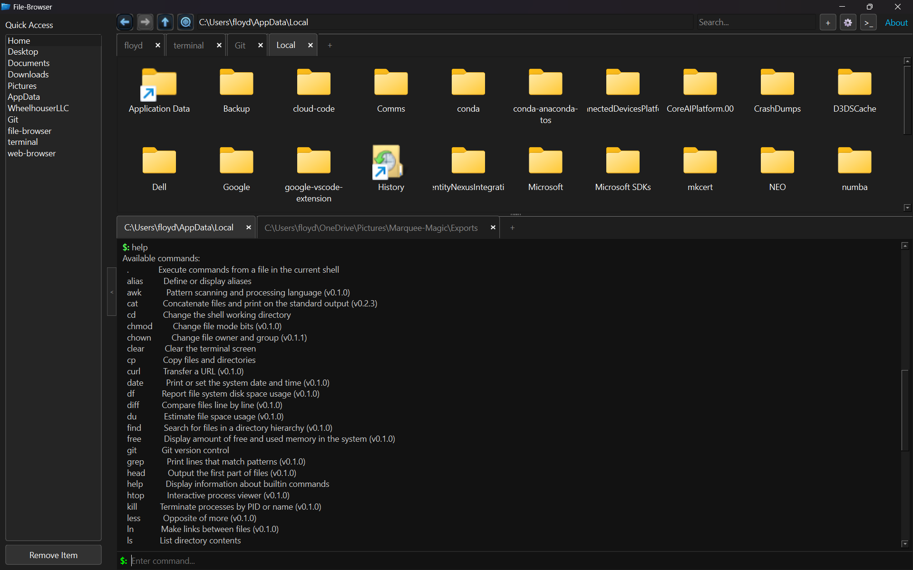
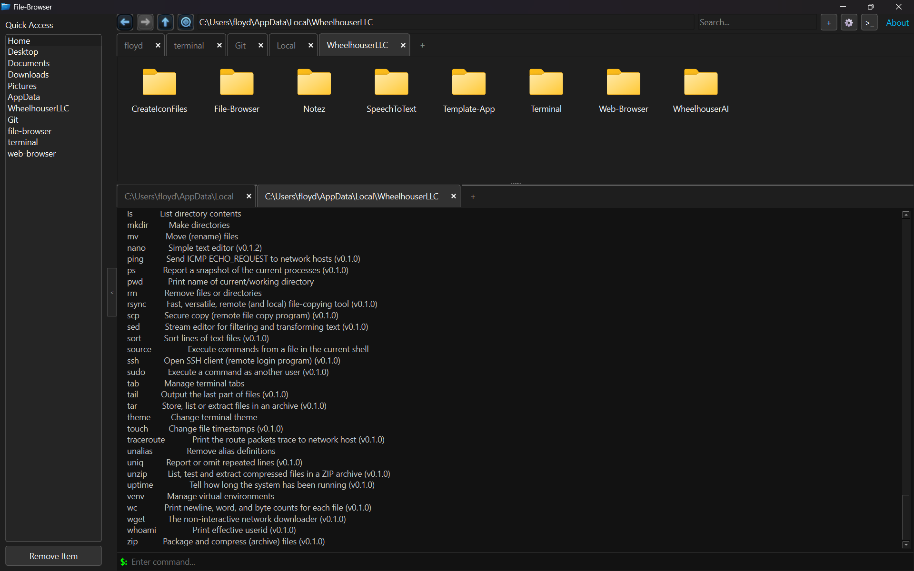

Wheelhouser LLC
Wheelhouser LLC
File Browser
Fast, modern desktop file manager with dual-pane views, integrated terminal emulation, and instant previews.




Scroll for more images →
About the Application
File Browser is a high-performance, ergonomic desktop file manager engineered by Wheelhouser LLC. Designed for developers, power users, and system administrators, it blends intuitive visual directory exploration with deep command-line integration in a cohesive native dark environment.
Whether navigating complex directory hierarchies, previewing media and source files, inspecting permissions, or dropping straight into an integrated PTY terminal at your current working directory, File Browser delivers seamless desktop productivity across Linux distributions, Windows, and macOS.
Key Features
- Wheelhouser Dark Mode: Polished dark theme applied across navigation bars, trees, lists, and context menus.
- Embedded Dual Terminal Emulation: Zero-latency embedded terminal tabs with synchronized directory tracking and full PTY support.
- Multi-Tab & Split Navigation: Browse multiple filesystem locations concurrently with instant tab restoration.
- Instant File & Media Preview: Built-in previewers for code, markdown, images, text, and binary metadata without external apps.
- Full Cross-Platform Parity: Identical high-performance workflow available across Linux (RPM & DEB), Windows 11, and macOS.
Downloads & Installation
Windows
Debian 13 (Trixie)
Install GPG keyring, repository source, and package:
sudo install -m 0755 -d /etc/apt/keyrings && \
curl -fsSL https://repo.wheelhouser.com/steve-rock-wheelhouser-gpg.key | sudo gpg --dearmor --yes -o /etc/apt/keyrings/wheelhouser.gpg && \
sudo chmod a+r /etc/apt/keyrings/wheelhouser.gpg && \
echo "deb [signed-by=/etc/apt/keyrings/wheelhouser.gpg] https://repo.wheelhouser.com/debian/13 ./" | sudo tee /etc/apt/sources.list.d/wheelhouser.list && \
sudo apt update && sudo apt install -y file-browserUbuntu 26.04 LTS (Resolute)
Install GPG keyring, repository source, and package:
sudo install -m 0755 -d /etc/apt/keyrings && \
curl -fsSL https://repo.wheelhouser.com/steve-rock-wheelhouser-gpg.key | sudo gpg --dearmor --yes -o /etc/apt/keyrings/wheelhouser.gpg && \
sudo chmod a+r /etc/apt/keyrings/wheelhouser.gpg && \
echo "deb [signed-by=/etc/apt/keyrings/wheelhouser.gpg] https://repo.wheelhouser.com/ubuntu/26.04 ./" | sudo tee /etc/apt/sources.list.d/wheelhouser.list && \
sudo apt update && sudo apt install -y file-browserView Source Code Wheelhouser Package Repository